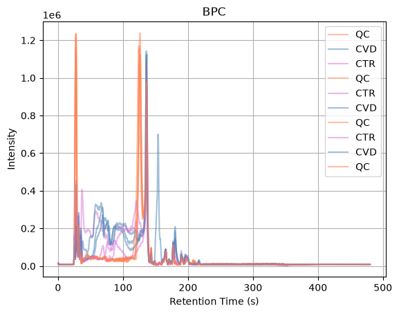
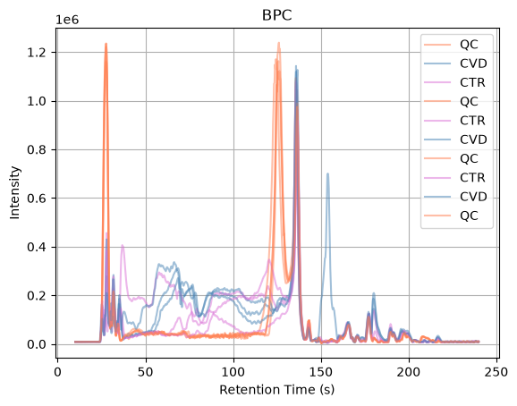
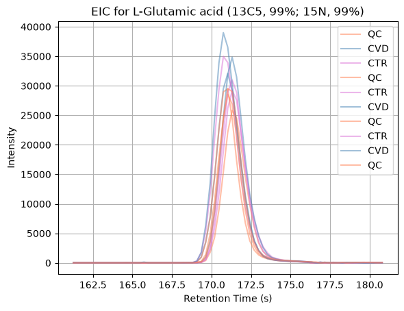

Pre-processing of LC-MS/MS metabolomics data using pyOpenMS#
import os
import re
import matplotlib.pyplot as plt
import numpy as np
import pandas as pd
import pyopenms as oms
The relevant files are selected:
metadata = pd.read_csv("data/MTBLS8735/metadata.csv")
input_labels = metadata["phenotype"].tolist()
input_files = []
for i in range(len(metadata)):
f = re.sub(r"FILES/", "", metadata["derived_spectra_data_file"][i])
input_files.append("data/MTBLS8735/" + f)
fname_intern_standard = os.path.join("data", "MTBLS8735", "intern_standard_list.txt")
Data visualization#
Before starting the pre-processing workflow, we visualize the Base Peak Chromatogram (BPC) for each sample. The BPC represents the intensity of the most intense ion detected in every MS1 spectrum over the course of the chromatographic run. Plotting the BPC provides a quick overview of the data quality and allows us to compare the overall signal profiles between samples. Similar chromatographic patterns across runs suggest consistent instrument performance, while large differences may indicate potential issues that should be investigated before proceeding with further analysis.

The BPC profiles show that the final portion of the chromatographic run contains little to no signal, indicating that no relevant compounds are being detected in this region. To reduce unnecessary data and focus the analysis on the informative part of the chromatogram, we filter the experiment by retention time and retain only spectra acquired between 10 and 240 seconds. The filtered BPCs allow us to verify that the useful chromatographic region has been preserved while removing empty sections that would otherwise increase processing time and data size.

Next, we load a table containing a list of internal standards (IS). Internal standards are compounds with known properties that are often included in metabolomics experiments as reference signals. In this workflow, we are not using them for quantitative correction, but simply visualizing their behavior across samples. This helps us inspect their chromatographic profiles and use them as a practical reference when selecting or adjusting preprocessing parameters.
intern_standard = pd.read_csv(
fname_intern_standard,
sep="\t",
)
intern_standard
| name | abbreviation | formula | POS | NEG | RT | data_set | sample | operator | version | quality_NEG | quality_POS | mz | mzmin | mzmax | rtmin | rtmax | |
|---|---|---|---|---|---|---|---|---|---|---|---|---|---|---|---|---|---|
| carnitine_d3 | Carnitine (D3) | carnitine_d3 | 164.1240 | [M+H]+ | NaN | 61 | 2019_11_matrix_effect | serum | Mar Garcia-Aloy | 2 | 3_bad | 2_medium | 165.131276 | 165.126276 | 165.136276 | 51 | 71 |
| creatinine_methyl_d3 | Creatinine (N-Methyl_D3) | creatinine_methyl_d3 | 116.0777 | [M+H]+ | [M-H]- | 126 | 2019_11_matrix_effect | serum | Mar Garcia-Aloy | 2 | 2_medium | 2_medium | 117.084976 | 117.079976 | 117.089976 | 116 | 136 |
| glucose_d2 | Glucose (6,6-D2) | glucose_d2 | 182.0759 | [M+Na]+ | [M+CHO2]- | 166 | 2019_11_matrix_effect | serum | Mar Garcia-Aloy | 2 | 1_good | 2_medium | 205.065120 | 205.060120 | 205.070120 | 156 | 176 |
| alanine_13C_15N | L-Alanine (13C3, 99%; 15N, 99%) | alanine_13C_15N | 93.0548 | [M+H]+ | [M-H]- | 167 | 2019_11_matrix_effect | serum | Mar Garcia-Aloy | 2 | 2_medium | 1_good | 94.062076 | 94.057076 | 94.067076 | 157 | 177 |
| arginine_13C_15N | L-Arginine HCl (13C6, 99%; 15N4, 99%) | arginine_13C_15N | 184.1199 | [M+H]+ | [M-H]- | 183 | 2019_11_matrix_effect | serum | Mar Garcia-Aloy | 2 | 0_perfect | 0_perfect | 185.127176 | 185.122176 | 185.132176 | 173 | 193 |
| aspartic_13C_15N | L-Aspartic acid (13C4, 99%; 15N, 99%) | aspartic_13C_15N | 138.0480 | [M+H]+ | [M-H]- | 179 | 2019_11_matrix_effect | serum | Mar Garcia-Aloy | 2 | 1_good | 1_good | 139.055276 | 139.050276 | 139.060276 | 169 | 189 |
| cystine_13C_15N | L-Cystine (13C6, 99%; 15N2, 99%) | cystine_13C_15N | 248.0380 | [M+H]+ | [M-H]- | 209 | 2019_11_matrix_effect | serum | Mar Garcia-Aloy | 2 | 0_perfect | 0_perfect | 249.045276 | 249.040276 | 249.050276 | 199 | 219 |
| glutamic_13C_15N | L-Glutamic acid (13C5, 99%; 15N, 99%) | glutamic_13C_15N | 153.0670 | [M+H]+ | [M-H]- | 171 | 2019_11_matrix_effect | serum | Mar Garcia-Aloy | 2 | 0_perfect | 0_perfect | 154.074276 | 154.069276 | 154.079276 | 161 | 181 |
| glycine_13C_15N | Glycine (13C2, 99%; 15N, 99%) | glycine_13C_15N | 78.0358 | [M+H]+ | NaN | 168 | 2019_11_matrix_effect | serum | Mar Garcia-Aloy | 2 | 3_bad | 1_good | 79.043076 | 79.038076 | 79.048076 | 158 | 178 |
| histidine_13C_15N | L-Histidine HCl H2O (13C6; 15N3, 99%) | histidine_13C_15N | 164.0807 | [M+H]+ | [M-H]- | 185 | 2019_11_matrix_effect | serum | Mar Garcia-Aloy | 2 | 0_perfect | 0_perfect | 165.087976 | 165.082976 | 165.092976 | 175 | 195 |
| isoleucine_13C_15N | L-Isoleucine (13C6, 99%; 15N, 99%) | isoleucine_13C_15N | 138.1118 | [M+H]+ | [M-H]- | 154 | 2019_11_matrix_effect | serum | Mar Garcia-Aloy | 2 | 2_medium | 2_medium | 139.119076 | 139.114076 | 139.124076 | 144 | 164 |
| leucine_13C_15N | L-Leucine (13C6, 99%; 15N, 99%) | leucine_13C_15N | 138.1118 | [M+H]+ | [M-H]- | 151 | 2019_11_matrix_effect | serum | Mar Garcia-Aloy | 2 | 2_medium | 2_medium | 139.119076 | 139.114076 | 139.124076 | 141 | 161 |
| lysine_13C_15N | L-Lysine 2HCl (13C6, 99%; 15N2, 99%) | lysine_13C_15N | 154.1197 | [M+H]+ | [M-H]- | 184 | 2019_11_matrix_effect | serum | Mar Garcia-Aloy | 2 | 1_good | 0_perfect | 155.126976 | 155.121976 | 155.131976 | 174 | 194 |
| methionine_13C_15N | L-Methionine (13C5, 99%; 15N, 99%) | methionine_13C_15N | 155.0649 | [M+H]+ | [M-H]- | 161 | 2019_11_matrix_effect | serum | Mar Garcia-Aloy | 2 | 1_good | 1_good | 156.072176 | 156.067176 | 156.077176 | 151 | 171 |
| phenylalanine_13C_15N | L-Phenylalanine (13C9, 99%; 15N, 99%) | phenylalanine_13C_15N | 175.1062 | [M+H]+ | [M-H]- | 153 | 2019_11_matrix_effect | serum | Mar Garcia-Aloy | 2 | 1_good | 1_good | 176.113476 | 176.108476 | 176.118476 | 143 | 163 |
| proline_13C_15N | L-Proline (13C5, 99%; 15N, 99%) | proline_13C_15N | 121.0771 | [M+H]+ | [M-H]- | 167 | 2019_11_matrix_effect | serum | Mar Garcia-Aloy | 2 | 1_good | 1_good | 122.084376 | 122.079376 | 122.089376 | 157 | 177 |
| serine_13C_15N | L-Serine (13C3, 99%; 15N, 99%) | serine_13C_15N | 109.0497 | [M+H]+ | [M-H]- | 178 | 2019_11_matrix_effect | serum | Mar Garcia-Aloy | 2 | 1_good | 0_perfect | 110.056976 | 110.051976 | 110.061976 | 168 | 188 |
| threonine_13C_15N | L-Threonine (13C4, 99%; 15N, 99%) | threonine_13C_15N | 124.0687 | [M+H]+ | [M-H]- | 171 | 2019_11_matrix_effect | serum | Mar Garcia-Aloy | 2 | 0_perfect | 0_perfect | 125.075976 | 125.070976 | 125.080976 | 161 | 181 |
| tyrosine_13C_15N | L-Tyrosine (13C9, 99%; 15N, 99%) | tyrosine_13C_15N | 191.1011 | [M+H]+ | [M-H]- | 166 | 2019_11_matrix_effect | serum | Mar Garcia-Aloy | 2 | 1_good | 1_good | 192.108376 | 192.103376 | 192.113376 | 156 | 176 |
| valine_13C_15N | L-Valine (13C5, 99%; 15N, 99%) | valine_13C_15N | 123.0928 | [M+H]+ | [M-H]- | 164 | 2019_11_matrix_effect | serum | Mar Garcia-Aloy | 2 | 1_good | 1_good | 124.100076 | 124.095076 | 124.105076 | 154 | 174 |
To inspect the internal standards in more detail, we extract and visualize their Extracted Ion Chromatograms (EICs). An EIC represents the intensity of ions within a specific m/z range over time, restricted here to a defined retention time window.
For each internal standard, we select its expected m/z and retention time boundaries from the metadata table, and then compute a signal per MS1 spectrum by summing the intensities of all peaks that fall within the selected m/z window. This produces a chromatographic trace that reflects the elution profile of that compound in each sample.
Plotting these EICs across runs allows us to visually check peak shape, retention time consistency, and signal presence, which helps guide the selection of appropriate preprocessing parameters such as chromatographic width or signal-to-noise ratio.

The different internal standards can be inspected by modifying the
variable i. From the resulting EICs, we observe that internal standards 0, 1, 3, 10,
11, and 18 exhibit poor peak shapes or weak signal quality. We can also see that
well-shaped peaks have a peak width of around 3-5 seconds.
Pre-processing - peak detection#
We now perform peak detection, which is a three-step workflow that transforms raw MS1 data into a structured feature table.
First, Mass Trace Detection groups signals that share a similar m/z across
consecutive scans, reconstructing continuous ion traces over retention time. Here, the
parameter mass_error_ppm = 10.0 defines the allowed mass tolerance when grouping
signals into the same trace. A relatively tight tolerance helps ensure that only signals
with highly consistent m/z values are merged, improving trace specificity.
Second, Elution Peak Detection identifies true chromatographic peaks within each
mass trace by evaluating their shape in the time domain. Several parameters control this
step: chrom_peak_snr = 3.0 sets a minimum signal-to-noise threshold to reduce weak or
noisy peaks, while chrom_fwhm = 3.0 defines the expected peak width (full width at
half maximum) used to guide peak detection. This value is chosen based on the observed
peak widths of well-behaved internal standards, which typically show widths of
approximately 3–5 seconds. The bounds min_fwhm = 0.5 and max_fwhm = 5.0 further
restrict acceptable peak widths based on this prior chromatographic behavior.
Additionally, masstrace_snr_filtering = true enables filtering of low-quality mass
traces before peak picking, improving robustness.
Finally, Feature Finding (Metabo) combines co-eluting mass traces into features that
likely correspond to the same metabolite. The parameter charge_upper_bound = 1
restricts detection to singly charged ions, which is typical for many metabolomics
datasets. chrom_fwhm = 3.0 again defines the expected chromatographic peak width used
during grouping, while local_rt_range = chrom_fwhm * 2 sets the retention time window
for associating signals across traces. isotope_filtering_model = none disables isotope
pattern-based grouping, keeping the workflow simpler. Setting remove_single_traces = false ensures that features composed of only one mass trace are retained, and
mz_scoring_by_elements = false disables element-based scoring of isotopic consistency.
Finally, report_convex_hulls = true enables the storage of chromatographic boundaries,
which can be useful for downstream visualization and inspection.
Progress of 'mass trace detection':
-- done [took 2.38 s (CPU), 2.36 s (Wall)] --
Progress of 'elution peak detection':
-- done [took 1.60 s (CPU), 0.43 s (Wall)] --
Progress of 'assembling mass traces to features':
-- done [took 1.32 s (CPU), 0.38 s (Wall)] --
MS_QC_POOL_1_POS.mzML
Progress of 'mass trace detection':
-- done [took 2.77 s (CPU), 2.75 s (Wall)] --
Progress of 'elution peak detection':
-- done [took 1.42 s (CPU), 0.37 s (Wall)] --
Progress of 'assembling mass traces to features':
MS_A_POS.mzML
-- done [took 1.10 s (CPU), 0.31 s (Wall)] --
Progress of 'mass trace detection':
-- done [took 2.52 s (CPU), 2.49 s (Wall)] --
Progress of 'elution peak detection':
-- done [took 1.42 s (CPU), 0.38 s (Wall)] --
Progress of 'assembling mass traces to features':
-- done [took 1.09 s (CPU), 0.31 s (Wall)] --
MS_B_POS.mzML
Progress of 'mass trace detection':
-- done [took 2.28 s (CPU), 2.26 s (Wall)] --
Progress of 'elution peak detection':
MS_QC_POOL_2_POS.mzML
-- done [took 1.61 s (CPU), 0.42 s (Wall)] --
Progress of 'assembling mass traces to features':
-- done [took 1.27 s (CPU), 0.39 s (Wall)] --
Progress of 'mass trace detection':
-- done [took 2.47 s (CPU), 2.44 s (Wall)] --
Progress of 'elution peak detection':
-- done [took 1.42 s (CPU), 0.37 s (Wall)] --
Progress of 'assembling mass traces to features':
-- done [took 1.11 s (CPU), 0.31 s (Wall)] --
MS_C_POS.mzML
Progress of 'mass trace detection':
-- done [took 2.91 s (CPU), 2.89 s (Wall)] --
Progress of 'elution peak detection':
-- done [took 1.48 s (CPU), 0.40 s (Wall)] --
Progress of 'assembling mass traces to features':
MS_D_POS.mzML
-- done [took 1.21 s (CPU), 0.34 s (Wall)] --
Progress of 'mass trace detection':
-- done [took 2.28 s (CPU), 2.27 s (Wall)] --
Progress of 'elution peak detection':
-- done [took 1.67 s (CPU), 0.45 s (Wall)] --
Progress of 'assembling mass traces to features':
-- done [took 1.26 s (CPU), 0.36 s (Wall)] --
MS_QC_POOL_3_POS.mzML
Progress of 'mass trace detection':
-- done [took 2.62 s (CPU), 2.60 s (Wall)] --
Progress of 'elution peak detection':
-- done [took 1.53 s (CPU), 0.40 s (Wall)] --
Progress of 'assembling mass traces to features':
MS_E_POS.mzML
-- done [took 1.28 s (CPU), 0.35 s (Wall)] --
Progress of 'mass trace detection':
-- done [took 2.67 s (CPU), 2.65 s (Wall)] --
Progress of 'elution peak detection':
-- done [took 1.42 s (CPU), 0.38 s (Wall)] --
Progress of 'assembling mass traces to features':
-- done [took 1.07 s (CPU), 0.29 s (Wall)] --
MS_F_POS.mzML
Progress of 'mass trace detection':
-- done [took 2.21 s (CPU), 2.19 s (Wall)] --
Progress of 'elution peak detection':
-- done [took 1.63 s (CPU), 0.44 s (Wall)] --
Progress of 'assembling mass traces to features':
MS_QC_POOL_4_POS.mzML
-- done [took 1.29 s (CPU), 0.39 s (Wall)] --
15854
12719
13142
15752
13013
13124
15865
14736
12066
16289
And the peaklist:
peaklist
| peptide_sequence | peptide_score | ID_filename | ID_native_id | charge | rt | mz | rt_start | rt_end | mz_start | mz_end | quality | intensity | |
|---|---|---|---|---|---|---|---|---|---|---|---|---|---|
| feature_id | |||||||||||||
| 15817544922602373104 | None | NaN | None | None | 0 | 190.000 | 50.015471 | 179.119 | 204.509 | 50.013222 | 50.018452 | 0.000003 | 143.119598 |
| 2476621172971713961 | None | NaN | None | None | 0 | 191.395 | 51.058931 | 190.558 | 196.696 | 51.058031 | 51.059849 | 0.000014 | 597.242554 |
| 2965257936832349297 | None | NaN | None | None | 0 | 205.904 | 51.941229 | 203.393 | 207.299 | 51.939158 | 51.943257 | 0.000002 | 104.045067 |
| 15632582343687217574 | None | NaN | None | None | 0 | 202.835 | 51.986538 | 200.603 | 205.904 | 51.985807 | 51.987559 | 0.000009 | 403.690704 |
| 10123093785080275356 | None | NaN | None | None | 0 | 142.569 | 53.014043 | 141.453 | 146.196 | 53.012243 | 53.016863 | 0.000002 | 98.585320 |
| ... | ... | ... | ... | ... | ... | ... | ... | ... | ... | ... | ... | ... | ... |
| 4369501639286021575 | None | NaN | None | None | 0 | 60.820 | 999.889846 | 60.541 | 62.215 | 999.797537 | 999.963191 | 0.000001 | 58.130596 |
| 11558892641752495259 | None | NaN | None | None | 0 | 63.331 | 999.928486 | 62.773 | 69.190 | 999.809274 | 999.997863 | 0.000005 | 217.114456 |
| 12677718500153175359 | None | NaN | None | None | 0 | 56.635 | 999.928825 | 36.267 | 57.751 | 999.828429 | 1000.010724 | 0.000002 | 101.281685 |
| 18108758546989161546 | None | NaN | None | None | 0 | 70.585 | 999.941249 | 69.469 | 73.096 | 999.899695 | 1000.020110 | 0.000002 | 76.413040 |
| 16094470024019312221 | None | NaN | None | None | 0 | 59.425 | 999.944787 | 58.030 | 60.262 | 999.842352 | 999.990283 | 0.000002 | 106.489151 |
16289 rows × 13 columns
Pre-processing - peak alignment and matching#
After feature detection, we perform retention time alignment and feature grouping to make features comparable across samples.
First, we select a reference feature map based on the sample with the highest number
of detected features (fm.size()), under the assumption that it provides the most
complete representation of the chromatographic signal. All other runs will be aligned to
this reference.
We then apply the Pose Clustering Map Alignment algorithm, which corrects retention
time shifts between samples by identifying corresponding feature patterns and estimating
RT transformations. Each non-reference feature map is aligned individually, producing a
transformation (TransformationDescription) that is then applied to adjust retention
times using the MapAlignmentTransformer. This step ensures that the same compounds
elute at comparable retention times across all runs.
Once alignment is completed, we construct a Consensus Map, which merges features
across samples into a unified representation. This is achieved using the
FeatureGroupingAlgorithmKD, which links features based on similarity in m/z and
aligned retention time. The parameter warp:mz_tol = 15.0 defines the tolerated m/z
deviation during grouping, while link:mz_tol = 15.0 controls the maximum m/z
difference allowed when connecting features across runs. distance_MZ:exponent = 1.0
defines a linear weighting of m/z differences in the similarity scoring, and
warp:max_nr_conflicts = 5 limits ambiguous assignments to improve grouping robustness.
The resulting consensus map contains a consolidated feature table, where each entry represents a putative metabolite observed across multiple samples, enabling downstream statistical analysis and annotation.
Progress of 'computing RT transformations':
-- done [took 1.12 s (CPU), 1.11 s (Wall)] --
Progress of 'linking features':
-- done [took 1.77 s (CPU), 1.75 s (Wall)] --
Total number of consensus features: 54872
peaklist = consensus_map.get_df()
sample_names = [os.path.basename(file) for file in input_files]
peaklist2 = peaklist[sample_names]
zero_counts = (peaklist2 == 0).sum(axis=1)
df_zeros = pd.DataFrame({"feature_id": peaklist2.index, "n_zeros": zero_counts})
freq_table = zero_counts.value_counts().sort_index()
df_freq = freq_table.reset_index()
df_freq.columns = ["Number_of_samples_with_0s", "n_features"]
df_freq
| Number_of_samples_with_0s | n_features | |
|---|---|---|
| 0 | 0 | 1772 |
| 1 | 1 | 1072 |
| 2 | 2 | 1136 |
| 3 | 3 | 1337 |
| 4 | 4 | 1743 |
| 5 | 5 | 2350 |
| 6 | 6 | 3460 |
| 7 | 7 | 4983 |
| 8 | 8 | 8729 |
| 9 | 9 | 28290 |
df = peaklist2.copy()
dict_0s = {}
for i in range(len(df)):
n_0s = (df.iloc[i] == 0).sum()
if n_0s not in dict_0s:
dict_0s[n_0s] = []
dict_0s[n_0s].append(i)
groups = list(dict_0s.keys())
samples = df.columns
result = pd.DataFrame(index=groups, columns=samples)
for j in samples:
sample_is = df[j]
for g in groups:
sample_feats = sample_is.iloc[dict_0s[g]]
n_0s = (sample_feats != 0).sum()
result.loc[g, j] = n_0s
result
| MS_QC_POOL_1_POS.mzML | MS_A_POS.mzML | MS_B_POS.mzML | MS_QC_POOL_2_POS.mzML | MS_C_POS.mzML | MS_D_POS.mzML | MS_QC_POOL_3_POS.mzML | MS_E_POS.mzML | MS_F_POS.mzML | MS_QC_POOL_4_POS.mzML | |
|---|---|---|---|---|---|---|---|---|---|---|
| 0 | 1772 | 1772 | 1772 | 1772 | 1772 | 1772 | 1772 | 1772 | 1772 | 1772 |
| 1 | 971 | 952 | 975 | 975 | 933 | 973 | 985 | 990 | 912 | 982 |
| 2 | 919 | 890 | 944 | 939 | 840 | 915 | 935 | 924 | 853 | 929 |
| 3 | 924 | 903 | 947 | 938 | 873 | 974 | 959 | 991 | 865 | 985 |
| 4 | 1068 | 997 | 1070 | 1099 | 975 | 1061 | 1085 | 1075 | 951 | 1077 |
| 5 | 1274 | 1079 | 1081 | 1291 | 1047 | 1118 | 1271 | 1259 | 1040 | 1290 |
| 6 | 1675 | 1117 | 1202 | 1711 | 1189 | 1210 | 1704 | 1309 | 1052 | 1671 |
| 7 | 1807 | 1205 | 1310 | 1814 | 1235 | 1318 | 1819 | 1398 | 1135 | 1908 |
| 8 | 2058 | 1489 | 1470 | 2066 | 1487 | 1513 | 2091 | 1770 | 1337 | 2177 |
| 9 | 3386 | 2315 | 2371 | 3147 | 2662 | 2270 | 3244 | 3248 | 2149 | 3498 |
peaklist.to_csv("openms_peaklist.csv")